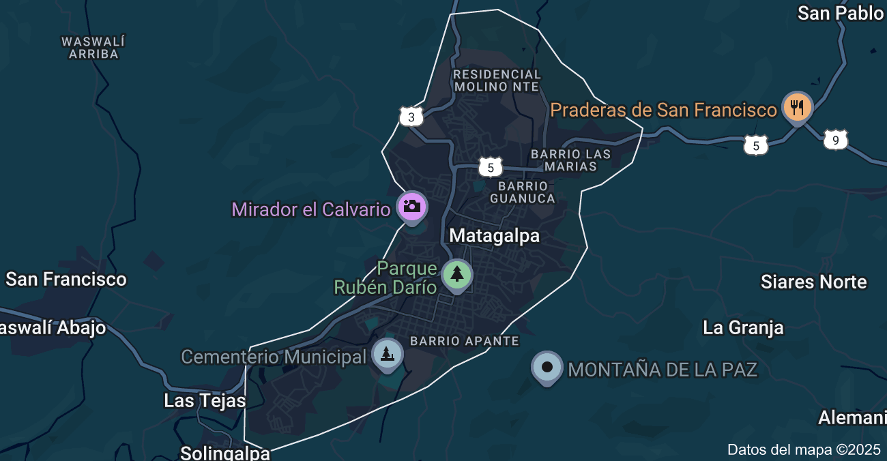

15 años de Experiencia Profesional
Nuestros logros y alcance
Pioneros en Reparación, Soporte y Asistencia Ténica en Computadoras y Desarrollo Web
Nuestra visión es transformar las frustraciones técnicas en experiencias fluidas y eficientes, elevando el estándar del soporte informático mediante la diagnóstico avanzado, la resolución experta y una comunicación clara y empática. Buscamos que cada interacción no solo solucione un problema, sino que también eduque y fortalezca la infraestructura tecnológica del usuario.
Ser el socio tecnológico preferido y líder en la ciudad de Matagalpa y Nicaragua, reconocido por nuestra excelencia, confiabilidad e innovación en el servicio técnico informático integral y por transformar ideas en soluciones digitales de alto impacto a través del desarrollo web.
Buscamos establecer a Servi-Netcom como un centro de referencia en innovación digital, operando como un Laboratorio de Prototipado y Optimización Tecnológica donde se desarrollan, prueban y escalan las soluciones web y de infraestructura informática más avanzadas para impulsar la eficiencia y competitividad de nuestros clientes.
Compromiso con el cliente y nuestro trabajo
Búsqueda constante de soluciones tecnológicas avanzadas
Trabajo en red con instituciones y empresas
Transferencia de conocimiento a profesionales y estudiantes
Servi-Netcom cuenta con infraestructuras únicas en Nicaragua para el Desarrollo de Software y Soporte Técnico General:
Descubre nuestras iniciativas más destacadas
Áreas de especialización de Servi-Netcom
Desarrollo de paginas y Aplicaciones Web
Realizando los mejores trabajos en Soporte Técnico:
En la estabilidad de las conexiones Lan, Wifi:
Solución Automatizada de la Información:
Tecnológia y colaboración empresarial
Estamos aquí para colaborar en tu proyecto Informático
Matagalpa, calle de los Bancos
Edificio Catarina
Matagalpa, Nicaragua
+505 8945 7891
info@servinetcom.com
Lunes a Sábados
8:00 - 17:00 h

Ver en Google Maps